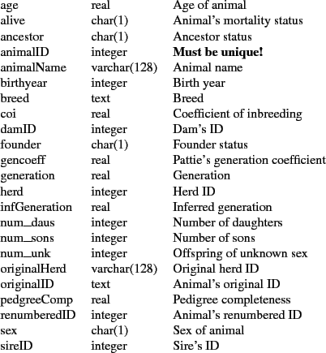

|
 |
 |
A Manual for use of PyPedal
A software package for pedigree analysis |
 |
 |
 |
10.1 Overview
An overview of the report generation tools in PyPedal is provided in this chapter. The creation of a new, custom report is demonstrated.
PyPedal has a framework in place to support basic report generation. This franework consists of two components: a database access module, pyp_db (Section ), and a reporting module, pyp_reports (Section ). The SQLite 3 database engine (http://www.sqlite.org/) is used to store data and generate reports. The ReportLab extension to Python (http://www.reportlab.org/) allows users to create reports in the Adobe Portable Document Format (PDF). As a result, there are two types of reports that can be produced: internal summaries that can be fed to other PyPedal routines (e.g. the report produced by pyp_reports.meanMetricBy() can be passed to pyp_graphics.plot_line_xy() to produce a plot) and printed reports in PDF format. When referencing the pyp_reports API note that the convention used in PyPedal is that procedures which produce PDFs are prepended with 'pdf'. Sections 10.2 and 10.3 demonstrate how to create new or custom reports. pyp_reports was added to PyPedal with the intention that end-users develop their own custom reports using pyp_reports.meanMetricBy() as a template. More material on adding new functionality to PyPedal can be found in Chapter 11.
Column names, data types, and descriptions of contents for pedigree tables are presented in Table
10.1. The metric_to_column and byvar_to_column dictionaries in
pyp_db are used to convert between convenient mnemonics and database column names. You may need to refer
to Table 10.1 for unmapped column names when writing custom reports. If you happen
to view a table scheme using the sqlite3 command-line utility you will notice that the columns are ordered
differently in the database than they are in the table; the table has been alphabetized for easy reference.
Columns in pedigree database tables.
Name & Type & Note(s)

Release 2.0.3, documentation updated on November 29, 2005
Revised May 15, 2012.
See About this document... for information on suggesting changes.